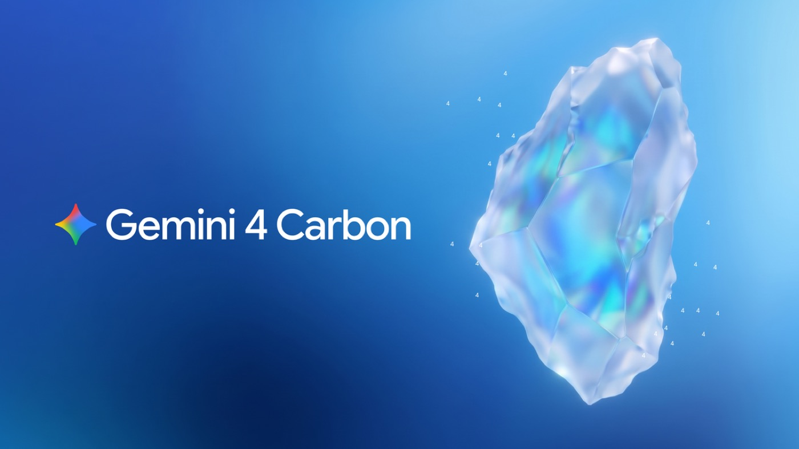
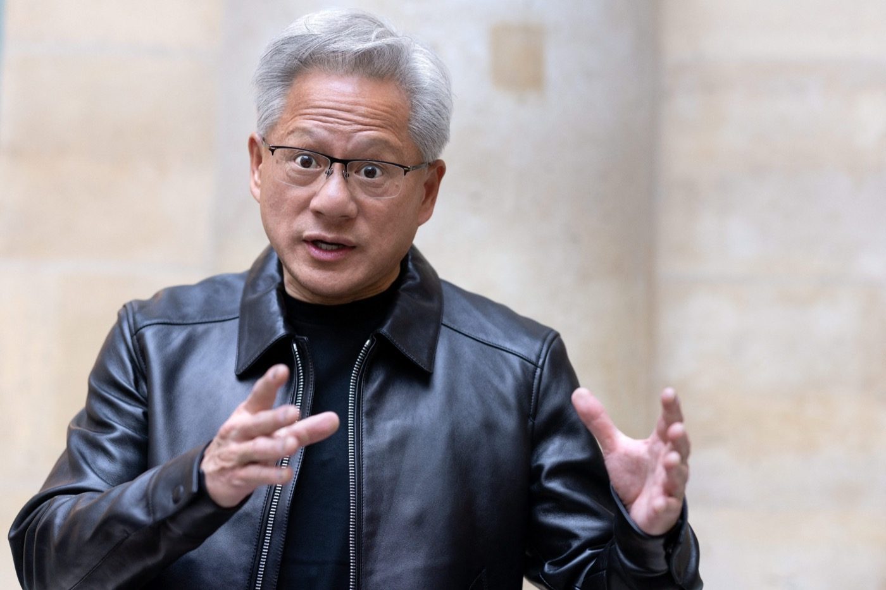
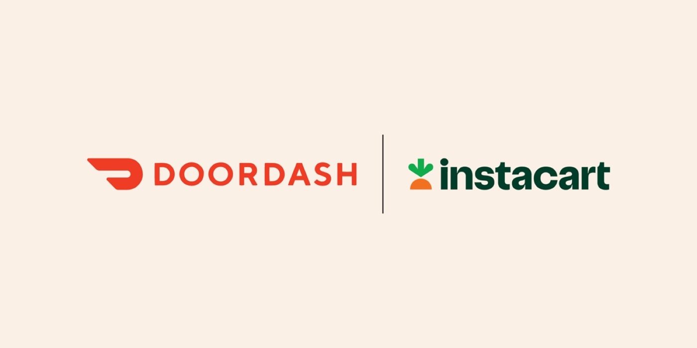
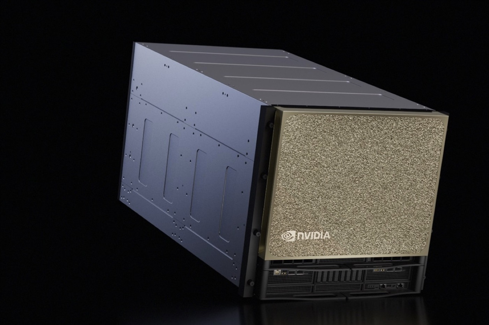
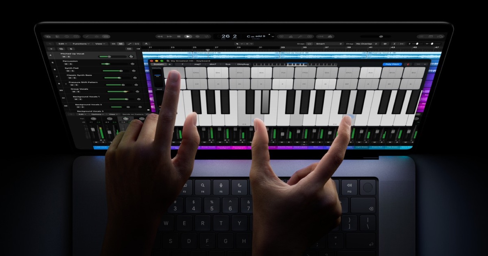
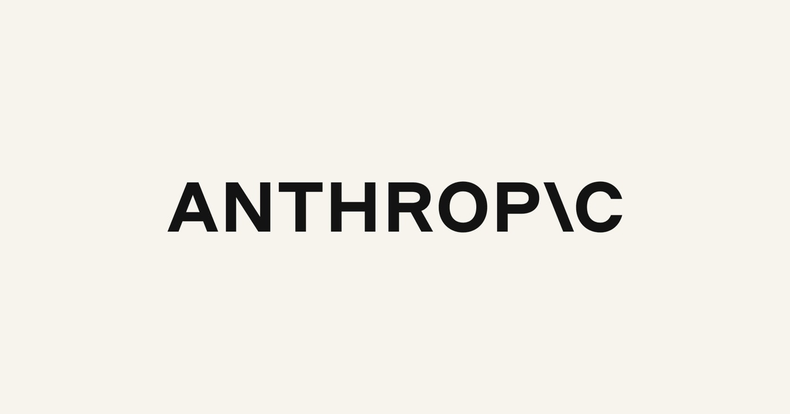

这里记录每周值得读的硬消息：政治、财经、科技、AI、国内股市、期货，每期 60 条，正文只放 18 条，其余在附录里。
所有内容都带可点开的一手链接，数字能在原文里逐字找到。周五发布。
| 807.48 亿美元 | Anthropic 递交 S-1 时披露的 2026 年上半年净亏损 |
| 10–2 | 美联储本次议息的投票结果，两票主张加息 |
| 115.32 美元 | ICE 布伦特 12 月合约 10-28 结算价，单日 +1.3% |
| 2.4098 万亿 | A 股两融余额，创年内新低，连续 13 个交易日缩水 |
（本期没有封面图。图库接口还没接，我宁愿空着，也不想放一张和内容无关的配图。）
这周有三件事，表面毫无关系，但我觉得是指向同一个方向。
第一件事，AI 公司开始交账了。 10 月 26 日，Anthropic 向 SEC 递交 S-1，准备以代码 ANT 上纳斯达克。招股书里最扎眼的一行是：2026 年上半年净亏损 807.48 亿美元。另一行是净收入留存率约 900%——客户不但没跑，还越买越多。两行数字放在一起，说明这家公司现在是「收入增长极快、亏损也极快」，它上市不是因为不缺钱，而是因为这条路只能靠公开市场继续供血。招股书有逾 90 页风险因素，高盛和摩根士丹利牵头承销。（Anthropic 公告）
第二件事，央行开始重新定义「紧」。 10 月 28 日，FOMC 以 10–2 维持联邦基金利率 3.75%–4%。分歧不是「降不降」，而是两位委员——Cook 与 Hammack——主张上调 1/4 个百分点。声明里的原话是通胀仍处高位，需要更多信息积累。（美联储声明）一天之后，欧洲央行按兵不动，存款便利利率维持 2.50%，但拉加德当场宣布自己 2027 年 2 月 7 日卸任，比任期提前约九个月。（欧洲央行）
第三件事，原油重新给地缘风险定价。 布伦特 12 月合约 10-28 结算 115.32 美元，WTI 102.78 美元，两者价差 12.54 美元。驱动不是需求，是供给端的两条消息：美国据报要求海湾阿拉伯国家为选举后对伊朗的军事行动做准备；胡塞武装称用弹道导弹打了沙特拉斯坦努拉炼厂。有意思的是第二天就回落了——10-29 布伦特结算 114.88 美元，跌 0.38%，因为美伊和谈预期升温。（CNBC）
三件事放在一起，我的读法是：便宜的算力、便宜的央行流动性和便宜的风险溢价，这一周同时在收尾。
AI 公司要用二级市场的钱喂算力，所以它必须披露 807 亿美元的亏损；央行不愿意再宽松，甚至有人主张加息，所以靠流动性推起来的资产没有下一轮弹药；而地缘风险一旦被计入油价，通胀那一段就更难下去——这三件事是互相咬合的，不是并行的三条新闻。
这也是我做这本周刊的第一个判断：读新闻不要按类目读，按「哪一个前提被打破了」读。 按类目读，这周是「政治 10 条、财经 10 条」的清单；按前提读，这周只有一个故事。




一、奥莱什基停火进入第三天，人道车队周五入境。
这场停火 10 月 27 日起在俄占奥莱什基及周边生效，是美方斡旋的六天停火。乌方谈判代表、最高拉达人权监察专员 Lubinets 说排雷已完成、车队已集结，援助 10 月 30 日开始送。城里估计还有约 2000 名居民，报道说不少人已经开始挨饿、以野菜为食。（AP）
这类新闻通常被当成「好消息」一笔带过。但它的真正价值在于模板：六天、局部、由第三方斡旋、以人道通道为目标——如果这套能跑通，它就是后面更大范围停火的施工图。反过来，六天到期后如果没有续期，说明双方只是各自需要喘息。
二、以色列最终计票：内塔尼亚胡阵营 53 席，失去过半。
120 席的议会里，内塔尼亚胡阵营拿 53 席，远低于它上届峰值时的 68 席；主要反对派阵营 48 席，阿拉伯政党合计 19 席。结果 11 月 4 日提交总统赫尔佐格。（AP）
值得注意的不是谁赢，而是19 席变成了造王者。内塔尼亚胡阵营已经在指责阿拉伯政党「窃取」选举，反对派则指责其污名化阿拉伯选民——组阁要磨几周，而这几周正好是加沙停火最脆弱的时候。
三、西班牙高铁相撞，至少 68 死，全国哀悼三天。
10 月 28 日当地 08:53（07:53 UTC），托莱多省 Mora 与 Orgaz 之间，一列 Renfe 高铁撞上停在红灯前的 Iryo 列车。AP 报 68 死、58 人住院，BBC 报 69 死——两个数字我都保留，不替它们取平均。交通部长 Puente 说 08:30 左右一次计算机故障导致六列车停车，控制中心在「无法解释的情形」下放行。（AP）
首相桑切斯的话很重：「像西班牙这样的国家一年内发生两起高铁事故是不可接受的。」1 月同一线路已经死过 46 人。而 11 月 29 日就是大选。
一、美联储 10–2 维持 3.75%–4%，两票主张加息。
这是本周我认为最容易被低估的一条。市场习惯把「按兵不动」读成「偏鸽」，但这次的异议票方向是收紧：Cook 与 Hammack 要求上调 1/4 个百分点。声明说通胀仍处高位，需要更多信息来判断合适的政策立场。（美联储）
决议之后，2 年期美债收益率从 4.70% 冲到 4.79% 上方，然后又落回 4.69%——交易员最终选择相信「不会加息」而不是「有人想加息」。这种「先信异议票、再信主席」的走法，通常出现在周期的转折点上。
二、欧洲央行按兵不动，拉加德宣布提前卸任。
三大利率不动：存款便利 2.50%、主要再融资 2.65%、边际贷款 2.90%。声明说能源价格持续上涨，对通胀是上行风险、对增长是下行风险。（欧洲央行）
同一天她告诉理事会和欧洲理事会主席科斯塔，自己 2027 年 2 月 7 日卸任，比任期提前约九个月。政策没变，人变了——对市场来说，下一任是谁比这次决议更重要。
三、DoorDash 以 170 亿美元收购 Instacart。
每股 65.00 美元，约 170 亿美元股权价值，溢价 26%（对比 Instacart 10-22 收盘，那是传闻见报前最后一个交易日）。至少 75% 是现金，股票部分不超过总对价 25%。交易要过 Instacart 股东会和美国 HSR、加拿大、以色列等地的审批，预计 2027 年底到 2028 年上半年才完成。（Instacart 公告）
外卖和买菜这两个生意打了十年，最后以合并收场。这是本周最典型的「资本周期结束」案例：增长买不到了，就买对手。

一、苹果发布首款触屏 MacBook Pro。
10 月 28 日发布，PROLED XDR 屏、tandem OLED、2000 尼特峰值亮度、120Hz 可变刷新率，M5 Pro / M5 Max，最高 128GB 内存、16TB 存储、24 小时续航。14 英寸 2,899 美元起，11 月 6 日开售。（Apple Newsroom）
乔布斯当年嘲笑触屏笔记本「人体工学好笑」，这次苹果自己把触屏装进了 Mac。CNBC 提到这是新任 CEO John Ternus 任内第三次重大产品发布——产品线的赌注换了人来做。
二、礼来 retatrutide 头对头击败司美格鲁肽。
TRANSCEND-T2D-2，2 型糖尿病患者、80 周：两个剂量组 A1C 平均降 2.2%，Ozempic 2mg 组降 1.8%；体重降 44.3 磅（19.5%，9mg）与 47.4 磅（20.9%，12mg），对照组 20.9 磅（9.4%）。这是 retatrutide 第六项阳性的 III 期，也是它第一次和其他 incretin 药物头对头。（礼来）
减肥药这条赛道的竞争方式变了：不比「能不能减」，比「头对头赢多少」。而头对头数据一旦成立，定价权就跟着走。
三、EDK II 网络引导驱动曝 9.5 分漏洞，没有稳定版补丁。
CVE-2026-97631，9.5/10。问题出在 PXE 网络引导驱动处理 ICMP 错误报文：报文被复制进 504 字节的固定缓冲区，IPv4 与 IPv6 版本的长度校验都写错了。这段代码是 16 年前引入的。（CVE 记录）
最麻烦的是最后一句：修复代码已经有了，但没有任何 EDK II 稳定版包含它。攻击者不需要口令、不需要权限，只要在目标机器的网络引导窗口发一条构造报文。这种「补丁在仓库里、不在固件里」的状态，恰恰是现代基础设施最真实的脆弱点——不是没人修，是没人能把它推到机器上。

一、Anthropic 递交 S-1，拟以 ANT 登陆纳斯达克。
10 月 26 日提交，纳斯达克全球精选市场，代码 ANT。上半年净亏损 807.48 亿美元，净收入留存率约 900%，承销商是高盛与摩根士丹利，逾 90 页风险因素。（Anthropic）
我建议把「807 亿亏损」和「900% 留存」并排看：这不是一家要垮的公司，而是一家用亏损换份额的公司。它的风险不在于增长，而在于资本市场愿不愿意继续为这个斜率付钱——而这正好接上前面美联储那一段。
二、司法部就英伟达 129 亿美元收购 Hugging Face 展开问询。
DOJ 向英伟达索取信息，评估这笔交易对竞争的影响。这是英伟达第二大收购，仅次于去年底 200 亿美元收购 Groq 资产。Hugging Face 有逾 1800 万用户、逾 20 万家公司和至少 300 万个模型。（CNBC）
芯片公司买模型社区，等于同时握住「算力」和「分发」。反垄断机构问的第一个问题一定是：以后别家的模型，在 HF 上还能不能平等地被看到。
三、OpenAI 发布 GPT-6.1 Terra，API 价格砍半。
标准 API 价格比 GPT-5.6 Terra 和 GPT-6.1 Sol 低 50%；在 Agents' Last Exam 上，中等推理力度比 GPT-5.6 Terra 高 15 个百分点，成本约为三分之一。官方说速度比 GPT-6 Astra 快三倍以上，而单价是它的十分之一。（OpenAI）
降价 50% 这件事，比任何一项 benchmark 都更能说明行业状态：能力还在涨，但已经不能靠能力涨价了。
一、10-29 沪指跌 0.82% 报 3,651.43 点，四大行总市值首破 10 万亿。
创业板指跌 4.45%，科创综指跌 4.46%，两市成交 1.56 万亿元、缩量 720 亿。同一天银行板块逆势走强，工行、建行续创历史新高，「工农中建」A+H 总市值历史首次突破 10 万亿。（新华社英文）
指数跌 0.82%、创业板跌 4.45%，这两个数字同时出现，说明资金没有离场，只是换了位置——从成长换到收息。这种结构比指数点位更值得记住。
二、两融余额降至 2.4098 万亿，创年内新低。
10 月 27 日的数据，连续 13 个交易日减少，当月缩水 1644.06 亿元；近四个月从 3.03 万亿降到 2.41 万亿，少了 6200 亿，融资余额已经回吐年内全部增量。（第一财经）
杠杆资金是这轮行情里最敏感的那部分。它连续 13 天撤退，比任何一次单日大跌都更能说明市场情绪的温度。顺带一提，10-28 又反弹了，沪指涨 0.91%、成交放量到 1.63 万亿——所以别把趋势线画得太直。
三、证监会就私募母基金新规征求意见，共二十三条。
10 月 23 日发布征求意见稿，明确母基金概念与分类，细化认定标准；对私募投资母基金豁免计入一层投资层级，对长期资金设置差异化投资比例要求，并要求建立投后跟踪、穿透管理和风险监测。（证监会）
这一条对做一级市场的人比指数涨跌重要得多。「豁免一层嵌套」直接改变了母基金的产品结构空间。
一、布伦特 12 月合约 10-28 结算 115.32 美元，涨 1.3%。
WTI 12 月同日结算 102.78 美元、涨 2.9%，两者价差 12.54 美元。供给端两条消息：美国据报要求海湾国家为选举后对伊朗的军事行动做准备；胡塞武装称以弹道导弹袭击沙特拉斯坦努拉炼厂。（CNBC）
次日就回落：10-29 布伦特结算 114.88 美元、跌 0.38%，原因是对美伊和谈的预期升温。一天涨、一天跌，说明市场现在对地缘消息的态度是「计价但不囤货」。
二、上期能源原油 SC2612 结算 735.9 元，涨 1.87%。
10-29 结算价 735.9 元/桶（前结算 722.4），当日收盘 730.8 元，成交 137,858 手，减仓 2,399 手。（上期能源）
要提醒的是口径：SC 的 735.9 元是在 10-29 亚洲时段跟着上一美盘（10-28）WTI 涨 2.9% 走的；10-29 美盘 WTI 又回落 0.76%，那个结算价在 SC 收盘之后才形成，没有计入。内外盘不同步的时候，跨市场价差很容易被误读。
三、螺纹钢 rb2701 逆势涨 0.62%，结算 3,060 元。
同一天大宗商品整体回落：沪铜 -0.16%、沪银 -1.38%、沪金 -0.06%，只有黑色系逆势收涨。rb2701 成交 742,495 手，持仓 1,749,307 手，大幅减仓 78,649 手。（上期所）
价格上涨、持仓大幅下降，这个组合通常是空头减仓离场，而不是多头大举进场。只看涨跌幅会得出完全相反的结论。
The Committee decided to maintain the target range for the federal funds rate at 3-3/4 to 4 percent, in support of the Federal Reserve's dual mandate.
—— 美联储 10 月 28 日 FOMC 声明（原文）。一句话里没有一个字提到宽松，但市场读成了宽松。
受管制美国产品的转移「微不足道」。
—— 英伟达回应「中国电信网络中出现 32 颗被禁 B300」的报道（Digitimes）。它没有否认那 32 颗芯片存在。
像西班牙这样的国家，一年内发生两起高铁事故是不可接受的。
—— 西班牙首相桑切斯，10 月 28 日事故之后（AP）。
首要任务是彻底拆解镇压体系、释放全部政治犯。
—— 委内瑞拉反对派领袖马查多，10 月 29 日在加拉加斯的首次公开讲话（AP）。她在流亡 10 个月后于 10 月 25 日回国。
（星数与周增速取自 GitHub Trending 周榜页面，抓取时间 2026-10-30 09:2x CST。）
brief.htmldashboard.htmlentries.jsonl、ledger.all.json、pages/（110 个正文落盘文件）本期 60 条全部通过机器校验：brief_lint.py 0 error、verify_quotes.py 60 条 113 源 0 mismatch、来源 T1 41% / T2 34% / T3 25%。
来源：四条线并行采集——官方一手（FOMC/ECB/上期所/EIA/SEC/证监会）→ 通讯社（AP、Reuters、CNBC）→ 垂直媒体（Digitimes、The Verge）→ 交易所结算文件。国外四类只用境外编辑部，中国官媒外文版不算国外源。每个来源都落盘正文并挂逐字引用，父代理用脚本核对引文是否真在正文里——核不上整条作废。
格式上的取舍（参考了阮一峰的科技爱好者周刊）：
已知缺陷：没有封面图（缺图库接口）；没有读者投稿渠道（阮一峰靠 GitHub Issues，我们可以用本地 inbox/ 目录 + 一个 issue 模板）；「言论」栏目目前只能从已采集的引文里挑，不能主动去找金句。
评论
用 GitHub 账号登录后即可评论；回复会嵌套在同一条讨论里，全部保存在仓库的 Discussions 里，不经过任何第三方数据库。若显示 “giscus is not installed”，请在仓库安装一次 giscus App（仓库与分类已配好，装完刷新即可）。